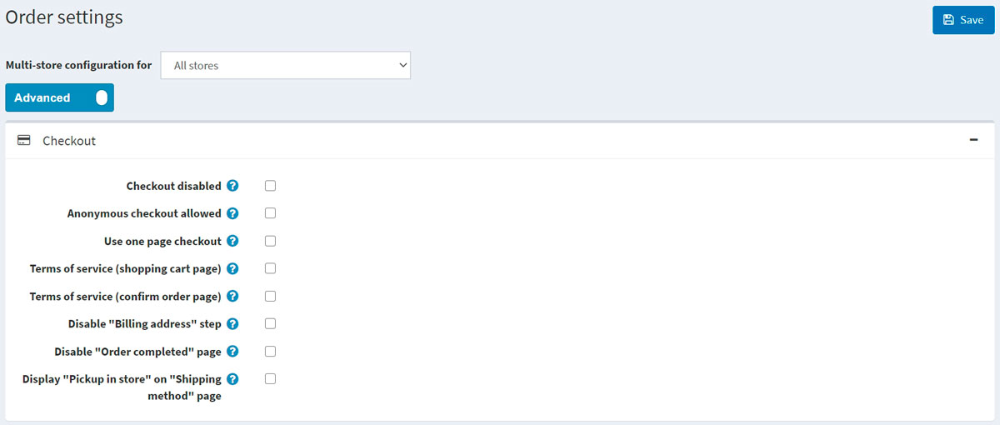
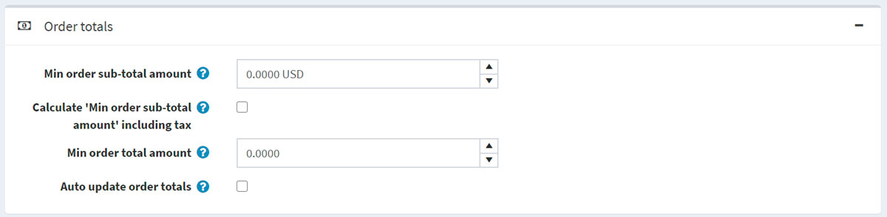
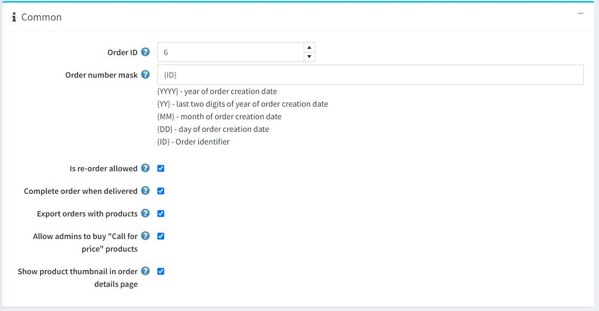
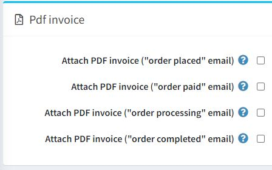
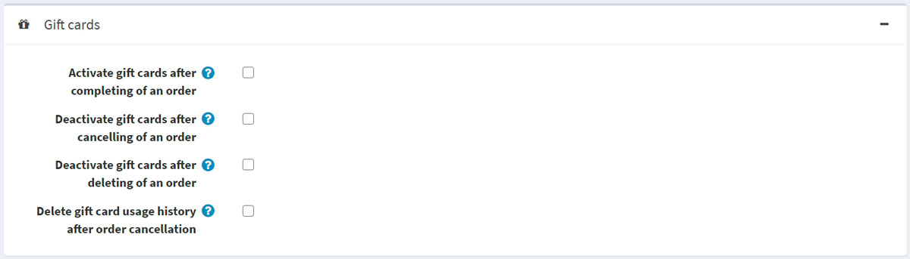

Order settings
To define order settings, go to Configuration → Settings → Order settings. The Order settings window will be displayed.
This page enables multi-store configuration; it means that the same settings can be defined for all stores or differ from store to store. If you want to manage settings for a certain store, choose its name from the multi-store configuration dropdown list and select all the checkboxes needed on the left to set custom values for them. For further details, refer to Multi-store.
In this window, you can define the following order settings:
Checkout
Define the following settings in the Checkout panel: 
- Checkout disabled to disable the checkout process.
- Anonymous checkout allowed to enable customers to purchase products without registration/logging in.
- Use one page checkout, which is a single webpage your customers would use to buy a product or a service from you.
- Order totals on payment info tab to display a product list and order totals in the payment info tab (one-page checkout).
- Whether to require customers to accept the Terms of service before processing the order (on the shopping cart page).
- Whether to require customers to accept the Terms of service before processing the order (on the confirm order page).
- Disable "Billing address" step during checkout. The billing address will be pre-filled and saved using the default registration data (cannot be used with guest checkout selected). In Configuration → Settings → Customer settings, ensure the appropriate address fields that cannot be prefilled are not required (or disabled).
- Disable "Order completed" page to automatically redirect a customer to the order details page after an order is placed.
- Display "Pickup in store" on "Shipping method" page or on the shipping address page.
Order totals
Define the following settings in the Order totals panel: 
- Min order sub-total amount. Orders below this amount will not be issued.
- Calculate "Min order sub-total amount" including tax. In this case, an order subtotal will be calculated including tax when validating Min order sub-total amount field specified in the previous step.
- Min order total amount. Orders below this amount will not be issued.
- Auto update order totals to have the order totals automatically updated on editing an order in the admin area (currently in BETA testing).
Common
Define the following settings in the Common panel: 
- The Order ID counter. This is useful if you want your orders to start with a certain number. This only affects orders created after defining. The value must be greater than the current maximum order ID.
- In Order number mask, you can create a custom order number. For example, starting with {YYYY} — the year of the order creation date.
- Is re-order allowed to enable customers to re-order. The re-order mechanism automatically adds all items that were in a previous order to the shopping cart.
- Complete order when delivered to set order status to "Complete" only when its shipping status is "Delivered." Otherwise, the "Shipped" status will be enough.
- Export orders with products.
- Allow admins to buy "Call for price" products to allow administrators (in impersonation mode) to buy products marked as "Call for price."
- Show product thumbnail in order details page to show product thumbnail in order details page.
PDF invoice
Define the following settings in the PDF invoice panel: 
- To Attach PDF invoice ("order placed" email).
- To Attach PDF invoice ("order paid" email).
- Attach PDF invoice ("order processing" email).
- To Attach PDF invoice ("order completed" email).
Tip
Learn how to set up PDF in the PDF settings chapter.
Gift cards
Define the following settings in the Gift cards panel: 
- Activate gift cards after completing of an order to activate related gift cards when an order is completed.
- Deactivate gift cards after cancelling of an order to deactivate related gift cards when an order is canceled.
- Deactivate gift cards after deleting of an order to deactivate related gift cards when an order is deleted.
- Delete gift card usage history after order cancellation to delete gift card usage history after an order is canceled.
Return request settings
In the Return request settings panel, you can set up return requests. For more details, see the Return request settings section.